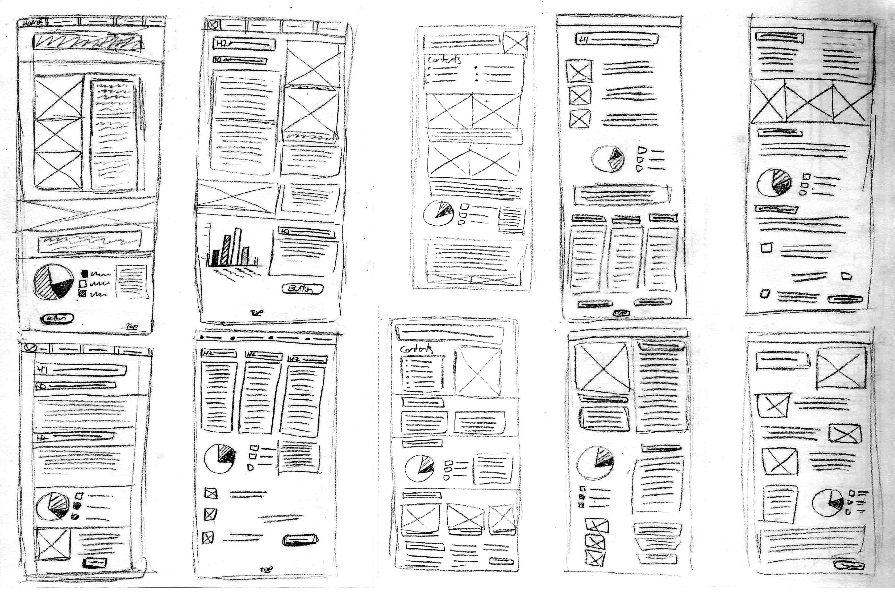

Envisioning Accessibility for the Future
Description
While obtaining my education in communication design, I realized there was a lot of information on accessibility for graphic design, such as 3D models and advertisement work, but the same couldn't be said for design in UI/UX. I wondered what similarities and differences there may be in designing for accessibility for a screen compared to more traditional mediums. To learn more about this topic and increase my understanding of UI and UX design, I wrote a research paper diving into this topic in depth. Using the research I gathered, I decided to write, design, and code an educational website which serves to introduce new designers to designing for online accessibility. My goal is to help new designers learn how accessible design may differ when designing for a screen, and how this information can enhance design as a whole.
First Conceptualization
Originally, my first thought for my thesis work revolved around self-promotion in virtual space. I found research that shows the average amount of time spent on a website is about 15 seconds. I set a goal to determine what UI design strategies will result in 75% of viewers staying on a website for at least 90 seconds.

However, I quickly changed my interest to online accessibility. I realized my thesis would be stronger if it was focused on a specific aspect of accessibility, so I focused on visual impairments. Considering web surfing is a largely visual medium, I was interested in what accessibility requirements were available while designing online. I felt surely there must be guidelines for all accessibility needs, given how important a social media presence has become for individuals and organizations alike.
However, I quickly changed my interest to online accessibility. I realized my thesis would be stronger if it was focused on a specific aspect of accessibility, so I focused on visual impairments. Considering web surfing is a largely visual medium, I was interested in what accessibility requirements were available while designing online. I felt surely there must be guidelines for all accessibility needs, given how important a social media presence has become for individuals and organizations alike.
Refinements
At this point, I had started gathering a sufficient amount of research, which I had begun organizing into notes. I had written a first draft of my research paper, and I started exploring with different ways I would categorize and display this information.
Final Renderings
With the script finalized, I moved on to completing the graphics I wanted to use. One section of the website discusses temporary impairments. I created a new set of icons to be used for this section, and then produced final vectors.
I also used Google to demonstrate how a Screenreader would navigate a website.
A visual demonstration for my final conclusion was made.
After the completion of my thesis work, I was able to present my work and get feedback from two UX designers, Brandon Pickett and Noah Dempewolf.
Your fluency with how to create more inclusive, universal experiences is necessary, highly valued and a powerful expression of how design can make the world better for everyone.
Noah Dempewolf
Final Deliverables
Conclusion
From my research, I realized that many websites are not up to date with current accessibility guidelines, which is often due to a lack of budget and time toward updating an old website design. A possible solution to this problem is teaching designing for the screen to student designers, regardless of their intended career path. I found that many new designers are taught to prioritize the final step, the visual aesthetics or UI, when most of the accessible design happens in the first steps- conceptualization and layout. For example, Screenreaders depend heavily on information hierarchy and layout design, as most read from top to bottom, and left to right. Unlike designing for marketing & advertisement deliverables, which happens quickly and remains static per project, designing for the screen must stand the test of time and will likely need to evolve over the coming years. For this reason, good design from the very start of the project is critical to the ongoing success of a product received over a technological device.
Final thoughts
Challenges Overcome
Skills Acquired
Reflection
I took this challenge because I wanted to learn everything I could about UX design while completing my thesis work. I felt accessibility was a topic that is often put on the back-burner when developing a new project, despite the importance of allowing every possible user to have access your work. Not only is this a good business move, it can save lives if the product is intended for emergency scenarios. (It's also simply considerate!) After doing my initial research for online accessibility as a whole, I discovered a problem- the general disregard toward teaching accessibility in design, let alone accessibility in designing for technological devices. I became excited about discovering my own solution to this problem, and by the end I developed a new appreciation for the beginning stages of design. The process of research, group meetings, intense planning sessions of informational hierarchy and wireframing, all gained a whole new importance as I realized these steps are truly the most important in good, accessible design.
As for the biggest challenge, I had the option to leave the project as primarily research and UI designs of a website concept, done in Sketch. As I was creating this project in my final semester as a full-time student, with the pandemic causing a shift to remote schooling, this was tempting. Still, I felt I had done a good job learning about UX design but there was another element that I really wanted to practice. At this point I had coded a few websites and I wanted to practice my frontend coding skills in order to get as much experience as I could out of this thesis project. With only a few weeks remaining to complete the project before submission, I committed to coding the website from scratch. As I had predicted, this was at least as taxing and time-consuming as my initial research. I was able to complete the code in time, therefore gaining both UX and front-end code experience from this project.